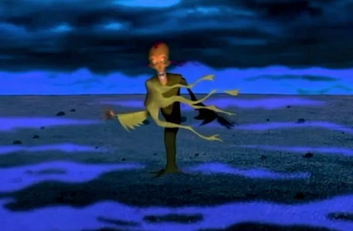

Fun Facts About Courage
- Courage’s elderly owners are named Muriel and Eustace after the middle names of Chandler Bing and Ross Geller of Friends.
- Whenever Courage springs into action to save his owners, a variation of the Mission: Impossible theme song begins playing.
- The show is set in a town called Nowhere, which is actually a real place in New Mexico
- The character of Courage was inspired by the creator's own childhood pet, a small Chihuahua who exhibited a mix of fear and bravery.
Did You Know
The show is set in a town called Nowhere, which is actually a real place in New Mexico. In real life, an elderly couple who lived in Nowhere with their pet dog frequently reported bizarre and paranormal activity, including a creature they identified as a Skin Walker. After their report, the couple went missing under strange circumstances. Only the dog was found.

The show ran from November 1999 to November 2002, when it was cancelled after 52 episodes spanning over four seasons. Cartoon Network gave Courage the axe when a coalition of mothers complained that an episode featuring a relationship between a female fox and female rabbit depicted lesbian symbolism.

There are a ton of fan theories surrounding the cartoon, but the most popular is that none of the monsters are real. The theory suggests they are all fabricated by Courage’s skittish mind.
